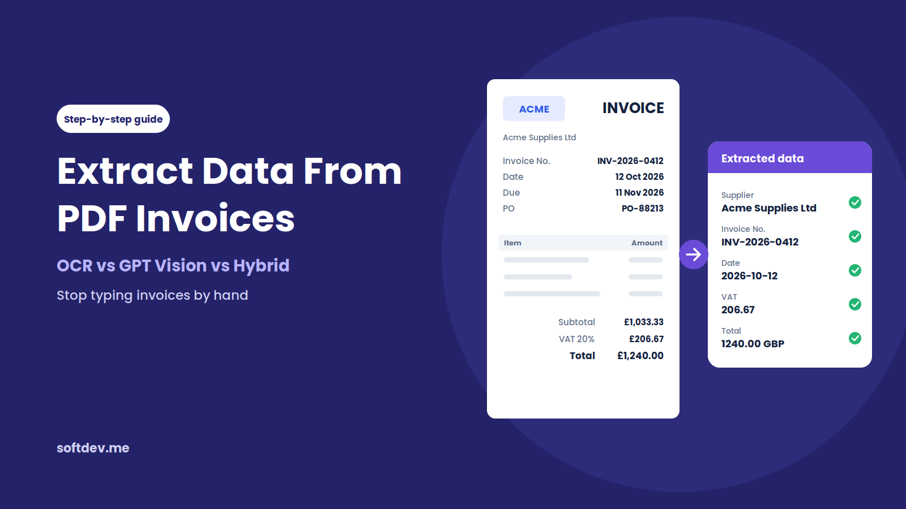
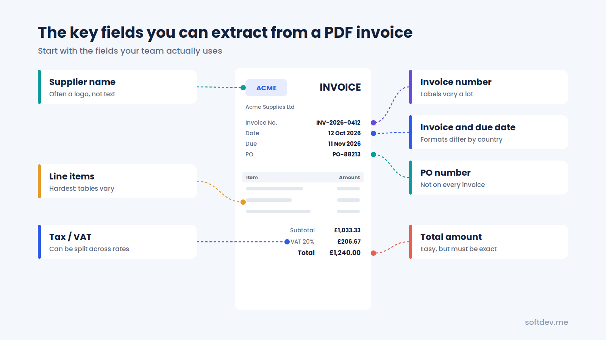
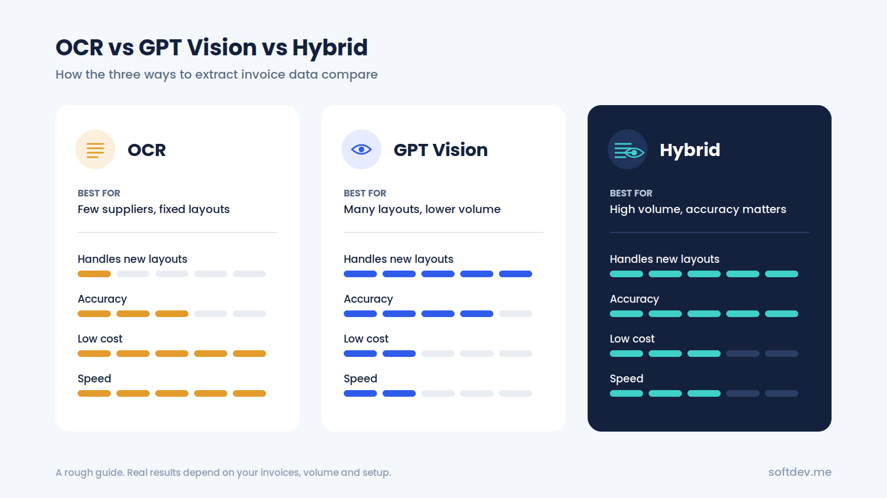
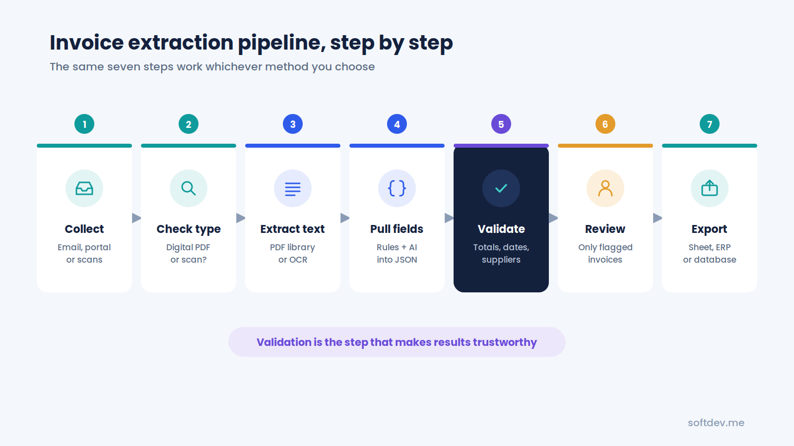
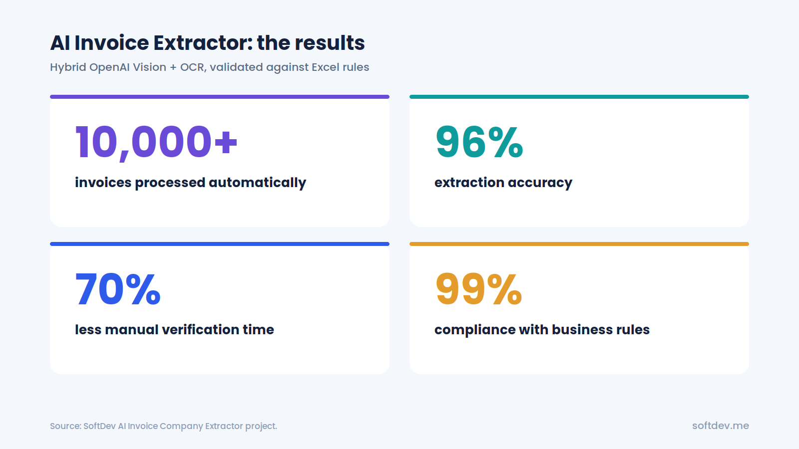

How to Extract Data From PDF Invoices: OCR vs GPT Vision vs Hybrid
A simple guide to the three main ways to extract data from PDF invoices, what each one is good at, and how to build a setup you can actually trust.

TL;DR - 6 takeaways - 15-second read
- Entering invoice details by hand takes time and leaves room for mistakes, especially when dealing with hundreds of invoices.
- OCR can quickly extract text from PDFs, but it cannot always tell what that text represents.
- GPT Vision can understand an invoice's layout and context, but it costs more and can still make mistakes.
- A hybrid approach combines OCR with AI to improve extraction and reduce errors.
- Validation is essential. Checking extracted data against business rules helps make the results more reliable.
- Our hybrid invoice extractor has processed over 10,000 invoices, achieved 96% extraction accuracy, and reduced manual verification time by 70%.
Introduction
If you've ever worked with invoices, you know how repetitive the process can get.
Every month, new invoices arrive in different formats. Some come as PDFs directly from accounting software, while others are scanned documents or photos taken on a phone. Someone then has to open each file, find the supplier name, invoice number, date, and total amount, and enter everything into a spreadsheet or accounting system.
It might not seem like a big job at first. But when you're dealing with hundreds or thousands of invoices, it quickly becomes time-consuming.
There's also the risk of human error. A misplaced digit, an incorrect date, or a supplier name entered differently can create problems later, especially during reconciliation.
The good news is that you don't have to do all this manually. You can extract data from PDF invoices automatically using tools such as OCR and AI vision models. The challenge is deciding which approach works best for your business.
In this guide, we'll look at three options: OCR, GPT Vision, and a hybrid approach that combines both. We'll explain how each method works, where it falls short, and how to build an invoice extraction pipeline that produces reliable results.
We'll also share a real example of how we built an AI invoice extractor that has processed more than 10,000 invoices.
Why Manual Invoice Data Entry Is a Problem
Manually entering invoice details isn't necessarily a problem when you only receive a handful of invoices each month. But as the volume increases, the process becomes harder to manage.
Here are some of the common issues businesses face.
It takes too much time.
Someone has to open each invoice, locate the required information, and enter it into the right fields. This might only take a few minutes per invoice, but those minutes add up quickly when you're processing hundreds of documents.
Small mistakes can cause bigger problems.
It's easy to enter the wrong amount, miss a digit in an invoice number, or use an inconsistent date format. These mistakes can lead to duplicate records, payment errors, and additional work during reconciliation.
Every supplier has a different invoice format.
One supplier might place the invoice number at the top of the page, while another puts it near the bottom. Some use labels such as "Invoice No.", while others use "Bill Number" or something similar.
People can usually work around these differences, but doing so manually takes time.
The process becomes harder to manage as the business grows.
More business often means more suppliers and more invoices. If your process still depends on someone entering every detail by hand, you'll eventually need more time, people, or both to keep up.
Automating invoice extraction helps solve these problems. Instead of typing every field, your finance team can focus on checking the results and handling invoices that need extra attention.
What Data Can You Extract from an Invoice?
Most invoices contain similar information, although the layout and wording can vary from one supplier to another.
Depending on your needs, an invoice extraction system can capture the following details:
| Field | Example | Extraction difficulty |
|---|---|---|
| Supplier or company name | Acme Supplies Ltd | Medium. The name may appear only in a logo. |
| Invoice number | INV-2026-0412 | Easy to medium. Labels and formats vary. |
| Invoice date and due date | 12/10/2026 | Medium. Date formats differ between countries. |
| Total amount and currency | £1,240.00 | Easy to identify, but the exact value must be correct. |
| Tax or VAT amount | £206.67 | Medium. Tax may be split across different rates. |
| Line items | 10 × Cable, £12.00 each | Difficult. Tables and descriptions vary. |
| Purchase order number | PO-88213 | Medium. Some invoices don't include one. |
| Bank or payment details | Account number, sort code | Medium. These details require careful validation. |
You don't necessarily need to extract everything.
Many businesses only need a few key fields to update their accounting records or match invoices against existing data. It's usually better to extract those fields accurately than to collect every possible detail and end up with unreliable results.

Method 1: OCR
OCR stands for optical character recognition. It converts text in an image or scanned document into machine-readable text.
For example, if you receive a scanned invoice, OCR can read the supplier name, invoice number, dates, and amounts and turn them into text that your software can process.
There are several options available, including open-source tools such as Tesseract and cloud-based OCR services.
One important thing to remember is that not every PDF needs OCR. If an invoice was created digitally and already contains selectable text, libraries such as pdfplumber or PyMuPDF can extract that text directly.
OCR is mainly useful when the invoice is scanned or saved as an image.
Where OCR works well
It's fast and affordable. OCR can process large numbers of documents without the cost of sending every page to an AI model.
It extracts the text that appears on the page. It doesn't need to generate an answer based on context, which makes it useful for capturing printed numbers and other details.
It can run locally. Depending on the tool you choose, you can process documents on your own servers rather than sending them to an external service.
Where OCR falls short
OCR can read the words on an invoice, but it doesn't necessarily understand what those words mean.
For example, an invoice might contain a subtotal, tax amount, total amount, and outstanding balance. OCR can extract all four numbers, but it won't automatically know which one your accounting system needs.
You may need rules or templates to identify the right fields. These rules can break when a supplier changes its invoice layout.
Poor-quality scans, stamps, logos, handwriting, and unusual formatting can also affect the results.
OCR is a good choice when you work with a limited number of suppliers and their invoice formats rarely change. It's particularly useful when processing speed and cost are major concerns.
Method 2: GPT Vision
GPT Vision takes a different approach. Instead of simply extracting text, a vision-capable AI model can examine an invoice's layout and use the surrounding information to work out what each field represents.
You can provide an invoice and ask the model to return specific details, such as the supplier name, invoice number, date, and total amount.
The response can be structured as JSON, making it easier to pass the extracted information into another application.
For example, you might ask the model to return something like this:
{
"supplier_name": "Acme Supplies Ltd",
"invoice_number": "INV-2026-0412",
"invoice_date": "2026-10-12",
"total_amount": 1240.00,
"currency": "GBP"
}
The main advantage is that the model can use context to understand the document, even when the layout is unfamiliar.
With OpenAI's API, PDF input can provide the model with both extracted text and page images, allowing it to consider the document's content and visual layout.
Where GPT Vision works well
It handles different invoice layouts. You don't have to create a separate template for every supplier before getting started.
It can use context to identify fields. For example, it can distinguish your company's details from the supplier's information when the document contains both.
It can interpret visual information. If a company name appears in a logo rather than selectable text, a vision model may still be able to identify it.
These capabilities make GPT Vision useful when invoices come from many different suppliers and don't follow a consistent format.
Where GPT Vision falls short
The biggest concern is that AI can sometimes return an answer that looks correct but isn't.
For example, a model might misread a digit in an invoice total or select the wrong company name when two businesses are mentioned on the same page.
It can also cost more than traditional OCR, particularly when processing long PDFs with multiple pages and detailed images. Processing time and cost depend on the model, the document, and the amount of information sent.
Privacy is another consideration. Before sending invoices to an external AI service, you should make sure the approach meets your company's data protection requirements.
GPT Vision is a good option when you need flexibility and your invoices vary significantly in layout. However, its output should still be checked before it's used for financial records.
Method 3: Hybrid
So, what if you could combine the strengths of OCR and GPT Vision?
That's the idea behind a hybrid approach.
OCR or a PDF text extraction library handles the initial text extraction. An AI model then uses that information, along with the invoice image when necessary, to identify the fields you need.
Finally, a validation layer checks the extracted data against predefined rules and your existing business records.
Here's what the process might look like:
- Extract the text using a PDF library or OCR.
- Use simple rules to identify straightforward fields, such as invoice numbers and dates, where possible.
- Send the relevant text and, when needed, the invoice image to an AI model to identify more complex fields.
- Compare the AI's answers with the original text and flag values that cannot be verified.
- Check the extracted information against your supplier list and other business rules.
- Send any questionable results to a person for review.
This approach gives you more flexibility than OCR alone while adding checks that help catch AI mistakes.
It can also reduce costs because you don't necessarily need to rely on a vision model for every field. Simple information can often be extracted directly, leaving the AI to handle the parts that require more context.
The key is to design the system so that extraction and validation work together rather than treating the AI's response as automatically correct.
OCR vs. GPT Vision vs. Hybrid: A Comparison
Each approach has its place. The best choice depends on the types of invoices you receive, the number you process, your budget, and how accurate the results need to be.
| Factor | OCR | GPT Vision | Hybrid |
|---|---|---|---|
| Handles unfamiliar layouts | Usually needs additional rules or templates | Handles varied layouts well | Handles varied layouts well |
| Extracts text from clean PDFs | Very well | Well | Very well |
| Understands the meaning of fields | Limited without additional rules | Strong contextual understanding | Combines AI understanding with text extraction |
| Risk of incorrect values | Low for successfully recognized text, but recognition errors occur | Can occasionally return incorrect values | Cross-checks can reduce errors |
| Processing cost | Usually the lowest | Usually the highest | Often falls between the two |
| Processing speed | Generally the fastest | Depends on the model and document | Depends on the workflow |
| Setup effort | May require supplier-specific rules | Often easier to start with | Requires more planning and validation |
| Best suited for | Consistent layouts and high volumes | Varied layouts and simpler workflows | High-volume processing where reliability matters |

There's no single winner for every situation.
OCR can be enough for straightforward invoices, while GPT Vision offers more flexibility when document layouts vary. A hybrid system is often worth considering when you need that flexibility but also want additional checks to reduce errors.
It's important to test each approach with your own invoices rather than assuming one method will always be more accurate than the others.
Step-by-Step Guide to Building an Invoice Extraction Pipeline
Once you've chosen your approach, the next step is to build a workflow that can process invoices from beginning to end.
Here's how a typical pipeline works.
Step 1: Collect invoices in one place
Invoices often arrive through email, supplier portals, or scanned documents.
Instead of processing them manually from different locations, route them into a central folder or inbox. This could be a shared Google Drive folder or a dedicated email address.
Your workflow can then detect new invoices and start processing them automatically.
Step 2: Check the file type
Before extracting anything, determine whether the PDF contains actual text or consists of scanned images.
This matters because digital PDFs can often be processed directly, without OCR.
Skipping unnecessary OCR can make the workflow faster and avoid introducing recognition errors where they aren't needed.
Step 3: Extract the text
Use a PDF library to extract text from digital invoices. If the document is scanned or image-based, use OCR instead.
Keep a copy of the original extracted text.
You'll need it later to verify the AI's answers and investigate any fields that don't look right.
Step 4: Extract the required fields
Now identify the information your business needs.
Simple rules may be enough for certain fields, while others may require an AI model to interpret the document.
Ask the model to return a consistent structure, such as JSON with predefined field names and data types. This makes the output easier to process and reduces problems caused by inconsistent responses.
You should also define how missing or unclear values are handled. For example, the model should return null rather than guess when it cannot identify a field reliably.
Step 5: Validate the results
This is one of the most important parts of the entire workflow.
Even if the extraction looks correct, check the results before saving them to your accounting system.
Useful validation checks include:
- Confirming that the invoice date is valid.
- Checking that the invoice total matches the expected calculation.
- Verifying that the tax and subtotal are consistent with the invoice.
- Matching the supplier against your approved supplier list.
- Checking whether the invoice number already exists.
- Confirming that required fields are present.
- Comparing extracted values against the original document.
Not every check applies to every invoice, so your validation rules should reflect how your business handles financial documents.
Step 6: Send questionable invoices for review
Not every invoice will be clear enough to process automatically.
A scan might be unreadable, a supplier might be missing from your records, or an amount might fail a validation check.
Instead of allowing the workflow to continue regardless, flag these invoices for manual review.
Include the reason for the flag so the person reviewing it knows what needs attention.
Over time, you can use these exceptions to identify recurring problems and improve the extraction process.
Step 7: Export the verified data
Once an invoice passes validation, send the extracted information to the appropriate destination.
Depending on your setup, this could be a spreadsheet, database, accounting platform, or another business application.
Keep a reference to the original invoice alongside the extracted data. This makes it easier to investigate discrepancies and maintain an audit trail.
At this point, the workflow can handle routine invoices automatically while leaving exceptions for your team to review.

Common Problems and How to Fix Them
Even a well-designed invoice extraction system can run into problems. The important thing is to identify the likely causes and build safeguards into the workflow.
| Problem | What happens | How to fix it |
|---|---|---|
| Poor-quality scans | Blurry or crooked pages produce incorrect text | Straighten the image and improve its contrast before running OCR. |
| Supplier name appears only in a logo | OCR cannot find the company name in the extracted text | Use a vision model to identify the name, then verify it against your supplier records. |
| Two company names appear on one invoice | The system selects your own company instead of the supplier | Tell the model which company belongs to your business and ask it to identify the issuing supplier separately. |
| Supplier names appear in different formats | Names such as "Acme Ltd" and "Acme Limited" create separate records | Match names against a standard supplier list using normalization and fuzzy matching where appropriate. |
| AI returns an incorrect amount | The extracted total looks reasonable but doesn't match the invoice | Compare the amount against the source document and check the invoice calculations. |
| Invoice spans multiple pages | Important line items or totals are missed | Process all relevant pages and combine their information before validating the result. |
| Duplicate invoices | The same invoice is entered more than once | Check the supplier and invoice number before creating a new record. |
| Required fields are missing | The workflow attempts to save incomplete information | Validate required fields and send incomplete invoices for review. |
| Date formats are inconsistent | Dates are interpreted incorrectly | Normalize dates into a standard format and confirm ambiguous dates when necessary. |
One thing becomes clear when you look at these problems: extracting the information is only part of the job.
The validation rules, duplicate checks, and exception handling are what help turn a basic extraction workflow into something a finance team can depend on.
Real Example: Our AI Invoice Extractor
We worked on an invoice processing project for a client whose finance team needed to identify the issuing company on PDF invoices and check that company against existing business records stored in Excel.
The problem was the volume of invoices. With documents coming from many different suppliers, manually checking every company name took considerable time.
The different invoice layouts made the task even harder. Some company names appeared as normal text, while others were part of a logo. In some cases, multiple company names appeared on the same page.
We built a hybrid invoice extraction system in Python that combines OCR with the OpenAI Vision API.
The workflow has three main stages.
1. Invoice ingestion
New PDF invoices are collected automatically and added to a processing queue.
This removes the need for someone to open every file and start the process manually.
2. Hybrid extraction
OCR and OpenAI Vision work together to identify the company issuing each invoice.
OCR provides the extracted text, while the vision model helps interpret the document's layout and identify company names that might otherwise be missed.
3. Validation and record updates
The extracted company name is checked against the client's Excel-based business rules.
Once the result passes the required checks, the workflow updates the relevant records. Results that need further attention can be flagged for review.
The results
The project produced the following results:
| Result | What it means |
|---|---|
| 10,000+ invoices processed | The system has handled more than 10,000 invoices through automated extraction. |
| 96% extraction accuracy | The combined OCR and vision approach achieved 96% accuracy under the project's evaluation criteria. |
| 70% less manual verification time | The finance team spends less time checking every invoice individually. |
| 99% compliance with business rules | The extracted results met the client's defined business rules at the reported rate. |
These figures reflect the results reported for this particular project. Accuracy and compliance can vary depending on document quality, the fields being extracted, and how the system is evaluated.
What we learned
The biggest lesson was that neither OCR nor AI was enough on its own for this use case.
OCR sometimes missed company names that appeared only in logos. The vision model could interpret those logos, but it occasionally selected the wrong company when several names appeared on the page.
Combining the two methods and checking the results against the client's own records helped address both problems.
We use similar principles in other document automation projects, too.
For example, our Automated Document Processing system classifies scanned mail into categories such as HR, Payroll, and Finance, then routes each document to the appropriate destination.
The details of each project are different, but the underlying idea is the same: automate the repetitive work while keeping checks in place to catch errors.

Which Method Should You Choose?
The right approach depends on what you're trying to achieve.
Choose OCR if:
- You receive invoices from a relatively small number of suppliers.
- Their invoice layouts rarely change.
- You're processing a high volume of documents and want to keep costs low.
- You can use rules or templates to identify the fields you need.
Choose GPT Vision if:
- You receive invoices from many different suppliers.
- The layouts vary considerably.
- You want to avoid building and maintaining templates for every supplier.
- Your invoice volume and budget make AI-based processing practical.
Choose a hybrid approach if:
- You're processing hundreds or thousands of invoices.
- Accuracy is important to your finance team.
- You need to handle different layouts, logos, and inconsistent formatting.
- You want to combine AI's flexibility with validation against your own records.
If you're unsure which method will work best, start with a small test.
Take around 50 real invoices that represent the different formats your business receives. Run them through the approaches you're considering, then compare the extracted results against the correct data.
Look at more than just the overall accuracy. Check which fields are most likely to be wrong, how much manual review is still required, how long processing takes, and what each invoice costs to process.
This gives you a much clearer picture of which solution makes sense for your business.
Conclusion
Manually entering invoice data might seem manageable at first, but it becomes increasingly difficult as the number of invoices grows.
Automating the process can save time, reduce repetitive work, and help your finance team focus on more important tasks.
OCR is a practical option for extracting text from straightforward documents. GPT Vision offers more flexibility when invoices have different layouts or require a better understanding of context. A hybrid approach combines the two and adds another layer of checking.
For many businesses, that combination is worth considering, especially when invoice volumes are high and mistakes can create problems later.
But there's one thing worth remembering: extracting the data is only half the job.
You also need to check that the supplier is correct, the numbers make sense, and the invoice hasn't already been processed.
With the right extraction method and validation rules in place, you can automate much of the repetitive work without losing control over the results.
Frequently Asked Questions
Can I extract data from scanned PDF invoices?
Yes. Scanned PDFs usually contain images rather than selectable text, so you'll need OCR or a vision-capable AI model to read them.
The quality of the scan makes a difference. Straightening crooked pages, improving contrast, and reducing image noise can help improve extraction results.
Is GPT Vision accurate enough for invoice processing?
GPT Vision can handle many invoice formats and identify information based on context, but it isn't perfect.
It may misread a number, confuse the supplier with the customer, or return an incorrect value. For this reason, it's best to validate the extracted information against the original invoice and your business records before saving it.
Is it safe to send invoices to an AI service?
That depends on your organization's data protection requirements and the service you use.
Before sending invoices to an external provider, review its data handling policies and make sure the setup meets your privacy and compliance requirements.
If your invoices must stay within your own environment, you can consider self-hosted OCR or a workflow that limits the information sent to an external AI service.
Do I need a separate template for every supplier?
Not necessarily.
Traditional OCR-based systems often rely on supplier-specific templates or rules to identify fields. These can require maintenance when invoice layouts change.
GPT Vision can handle a wider range of layouts without a separate template for every supplier. A hybrid system can also reduce the need for templates, although validation rules are still important.
How long does it take to build an invoice extraction system?
It depends on the complexity of the workflow.
A simple system that extracts a few fields from standard PDFs may take only a few days to build.
A more complete solution with OCR, AI extraction, validation, duplicate detection, a manual review process, and accounting system integration can take several weeks. A project with complex business rules or legacy integrations may take longer.